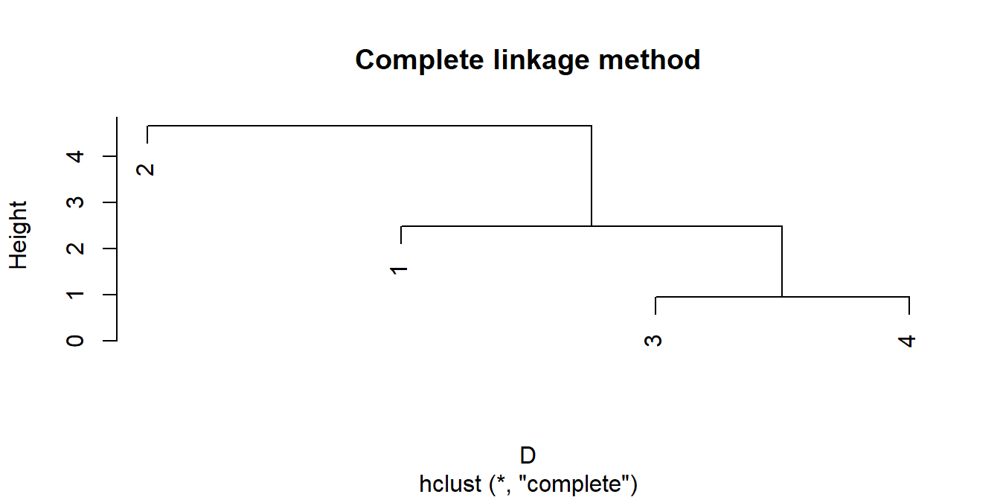
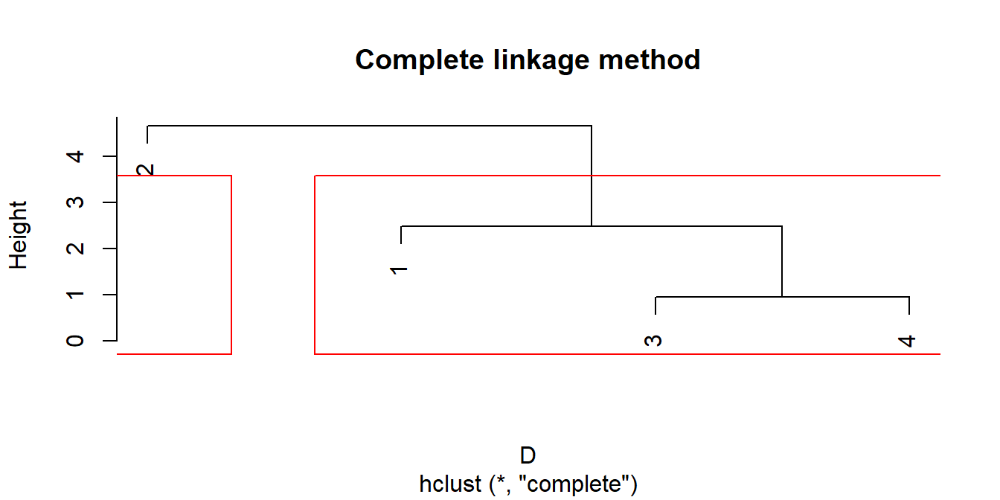

Реализуем в R иерархический кластерный анализ, который мы проделали на семинаре вручную. У нас есть четыре наблюдения и две переменные, \(X\) и \(Y\). Запишем значения в векторы, а затем объединим их в датафрейм:
x <- c(0, 7, 1, 4)
y <- c(4, 0, 2, 2)
dat <- cbind.data.frame(x, y)
dat## x y
## 1 0 4
## 2 7 0
## 3 1 2
## 4 4 2Примечание 1: cbind соответствует объединению по столбцам (от columns), rbind — объединению по строкам (от rows).
Примечание 2: в данном случае функция cbind() тоже бы подошла, только стоит иметь в виду, что она создаёт матрицу, а не датафрейм. Проблема может возникнуть тогда, когда x и y являются векторами разного типа, при объединении в матрицу все элементы будут приведены к одному типу. Победит более сильный тип: например, строковый (character) вытеснит числовой (numeric), и все элементы станут текстовыми.
Построим матрицу расстояний D, но прежде шкалируем наши данные с помощью функции scale(): вычтем из каждого значения в столбце x среднее по столбцу и поделим на стандартное отклонение по столбцу, затем проделаем то же самое для столбца y:
dist(scale(dat))## 1 2 3
## 2 3.3015148
## 3 1.2649111 2.2583180
## 4 1.7606817 1.5491933 0.9486833Матрица в R получилась довольно экономной: она показывает только расстояния между различными точками и не дублирует одни и те же расстояния, предполагая, что матрица симметричная. По умолчанию функция dist() считает евклидово расстояние. Запросим документацию функции через ?:
?distСписок доступных расстояний:
euclidean: евклидово расстояние;maximum: расстояние Чебышёва;manhattan: манхэттенское расстояние;canberra: канберрское расстояние;binary: асимметричное бинарное расстояние;minkowski: расстояние Минковского.Вычислим манхэттенское расстояние (оно было нужно нам по условию) и сохраним матрицу расстояний в переменную D:
D <- dist(scale(dat), method = "manhattan")
D## 1 2 3
## 2 4.6630841
## 3 1.5409726 3.1221115
## 4 2.4896559 2.1734282 0.9486833Теперь запустим иерархический кластерный анализ, выберем метод дальнего соседа, метод полной связи (complete):
hc <- hclust(D, method = "complete")
hc##
## Call:
## hclust(d = D, method = "complete")
##
## Cluster method : complete
## Distance : manhattan
## Number of objects: 4По умолчанию функция hclust() использует именно этот метод, поэтому в данном случае аргумент method можно было бы опустить. Список основных методов такой:
complete: метод полной связи;single: метод одиночной связи;average: метод средней связи;median: метод медианной связи;centroid: метод центроидной связи.Осталось только построить дендрограмму, для этого потребуется базовая функция plot():
plot(hc, main = "Complete linkage method")
Если мы определились с числом кластеров, можем выделить их на дендрограмме явно, с помощью прямоугольников:
plot(hc, main = "Complete linkage method")
rect.hclust(hc, k = 2, border = "red")
Примечание: функция rect.hclust() добавляет прямоугольники на уже существующий график, то есть накладывает ещё один слой c графическими элементами. Поэтому эта строка с кодом должна запускаться сразу после plot(). Если запустить её два раза с разным k, не перезапустив строку с plot(), прямоугольники тоже добавятся два раза, поэтому не забывайте обновлять саму дендрограмму.
Из объекта hc, который нам создала функция hclust(), можно извлекать отдельные элементы. Например, расстояния, при которых производилось объединение кластеров на каждой итерации алгоритма:
hc$height## [1] 0.9486833 2.4896559 4.6630841Или метки наблюдений в том порядке, в котором они упорядочены на дендрограмме:
hc$order## [1] 2 1 3 4А ещё меткам можно присвоить свои обозначения, если текущие нас не устраивают. Создадим вектор, состоящий из букв A, B, C, D:
labs <- LETTERS[1:4]
labs## [1] "A" "B" "C" "D"Примечание: LETTERS — встроенный вектор из заглавных букв английского алфавита, выбираем первые четыре. Есть ещё вектор letters (строчные буквы английского алфавита), month.name (названия месяцев на английском) и month.abb (сокращённые названия месяцев на английском).
Запишем новые метки в hc:
hc$labels <- labsИ построим дендрограмму по hc ещё раз:
plot(hc, main = "Complete linkage method")